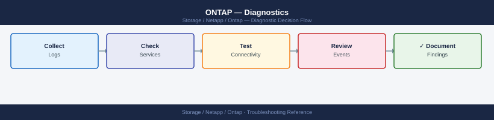

ONTAP — Diagnostics¶
cluster show and storage failover show, inspect aggregate and disk state with storage aggregate show-status and storage disk show -broken, check volume state and capacity with volume show -state !online, diagnose NFS/CIFS/iSCSI/FC protocols with per-protocol statistics, trace SnapMirror lag with snapmirror show -health false, analyse EMS events with event log show -severity CRITICAL, and generate an AutoSupport bundle before calling NetApp support.
*Applies to: ONTAP 9.x*

graph TD
A([ONTAP Issue]) --> B[cluster show: node health\nsystem health status show\nstorage failover show: HA state]
B --> C{Symptom scope?}
C -->|Cluster or node| D[system node show: state and uptime\ncluster ring show: cluster services\nstorage failover interconnect show]
C -->|Storage or disk| E[aggr show -state !online\nstorage disk show -broken\ndisk show -raid-state recon]
C -->|Volume or space| F[volume show -state !online\nvolume show percent-used > 90%\nvolume efficiency show: dedup]
C -->|Network or LIF| G[net int show -status-oper down\nnet int show -is-home false\ncluster ping-cluster: ICL health]
C -->|Protocol| H{Which protocol?}
H -->|NFS| I[nfs connected-client show\nvserver export-policy check-access\nstatistics start -object nfsv3]
H -->|CIFS/SMB| J[vserver cifs domain info\nvserver cifs session show\nstatistics start -object smb2]
H -->|iSCSI| K[iscsi session show\nlun mapping show\nlun igroup show]
H -->|FC| L[fcp adapter show\nfcp initiator show\nfcp topology show]
C -->|SnapMirror| M[snapmirror show -health false\nsnapmirror lag show\nnet int show -role intercluster]
C -->|Performance| N[statistics start -object volume\nqos statistics performance show\nsystem node run sysstat]
D --> O[autosupport invoke: all nodes\nOpen NetApp support case]
E --> O
F --> O
G --> O
I --> O
J --> O
K --> O
L --> O
M --> O
N --> O
classDef dark fill:#1e3a5f,color:#fff
classDef action fill:#78350f,color:#fff
classDef escalate fill:#991b1b,color:#fff
class A,C,H dark
class B,D,E,F,G,I,J,K,L,M,N action
class O escalateBefore you begin¶
- Access: SSH to cluster management IP or node management IP as admin; node shell (
system node run -node <node>) for advanced per-node commands; SP/BMC console for unresponsive nodes - Gather first:
cluster show(node count and health),system health status show(overall health), the affected SVM and volume or protocol, and the specific symptom (error message, offline resource, slow response time) - Scope: confirm whether the issue is cluster-wide (all SVMs affected), node-specific (one node or aggregate), SVM-specific (one protocol or tenant), or volume-specific —
event log show -severity CRITICALandsystem health alert showgive the fastest cross-component view - AutoSupport: always trigger an AutoSupport before calling NetApp —
system node autosupport invoke -node * -type all -message "case <SR> - <description>"
Step 1 — First response¶
Run these commands immediately on any ONTAP incident.
# Overall cluster health summary
cluster show
system health status show
system health alert show
# HA pair state
storage failover show
# Check for any broken disks
storage disk show -broken
# Check for any offline aggregates
storage aggregate show -state !online
# Check for any offline volumes
volume show -state !online
# Check network interfaces that are down
network interface show -status-oper down
# Recent CRITICAL and ERROR events
event log show -severity CRITICAL
event log show -severity ERROR -time-range 1h
If any of these commands return unexpected results, follow the relevant subsystem diagnostic section below.
Step 2 — Cluster and node diagnostics¶
# Cluster node count and status
cluster show
# All nodes should show: health=true, eligibility=true
# Detailed node status including uptime
system node show
system node show -fields node,health,state,uptime,model,serial-number
# Node-level hardware configuration (drops to node shell)
system node run -node <node_name> sysconfig -a
# Node environment (temperature, fans, power)
system node run -node <node_name> environment status
# Node-level system resource utilisation
system node run -node <node_name> sysstat -c 5 -x 2
# Check the cluster ring (internal cluster services)
cluster ring show
# Epsilon node (tiebreaker in split-brain scenarios)
cluster show -fields node,epsilon
Storage failover diagnostics¶
# Detailed HA failover state
storage failover show -fields node,enabled,state,partner,takeover-enabled,giveback-status
# Check interconnect link status between HA partners
storage failover interconnect show
# Test cluster interconnect ping (HA heartbeat)
cluster ping-cluster -node <node_name>
# Show failover history (recent takeovers and givebacks)
storage failover history show -node <node_name>
HA state interpretation:
| State | Meaning | Action |
|---|---|---|
Connected, Not in takeover |
Normal — HA active | None |
Connected, Waiting for Giveback |
Partner was taken over; partner is recovered and waiting | Run storage failover giveback -ofnode <node> |
In Takeover |
Active takeover in progress or complete | Wait for completion or giveback |
Disconnected |
HA interconnect link down | Check physical link; investigate immediately |
false (enabled) |
HA disabled | Run storage failover modify -node <node> -enabled true after investigation |
Step 3 — Storage — aggregate and disk diagnostics¶
# Aggregate health — show any not online
storage aggregate show -state !online
storage aggregate show -fields aggr-name,node,state,raid-status,percent-used
# Aggregate RAID status detail
storage aggregate show-status -aggregate <aggr_name>
storage aggregate show-raidtree -aggregate <aggr_name>
# Disk health
storage disk show -broken -fields disk,container-type,bay,shelf,node,serial-number
storage disk show -container-type spare # confirm spares available for rebuild
storage disk show -raid-state reconstructing # active RAID reconstruction
# All disks with firmware revision and location
storage disk show -fields disk,bay,shelf,node,firmware-revision,rpm,size,disk-type
# Disk shelf status
storage shelf show
storage shelf show -detail
RAID reconstruction monitoring¶
When a disk fails and a spare is available, ONTAP automatically starts RAID reconstruction. Monitor progress:
# Show reconstruction status
storage disk show -raid-state reconstructing
# Show aggregate state during reconstruction
storage aggregate show -aggregate <aggr_name> -fields state,raid-status
# Watch reconstruction progress (check every 60 seconds)
storage aggregate show-status -aggregate <aggr_name>
# Look for "Parity reconstruction" or "Data reconstruction" with a percentage
Typical reconstruction times: - NVMe SSD: hours to a day for large capacities - SAS HDD: 6–24 hours per TB depending on disk RPM and aggregate workload - SATA HDD: 12–48+ hours per TB
Step 4 — Volume diagnostics¶
# Volume state — identify offline or restricted volumes
volume show -state !online
volume show -state offline
volume show -state restricted
# Volume capacity — identify full or near-full volumes
volume show -fields vserver,volume,size,used,available,percent-used | sort -k5 -rn
# Autosize configuration
volume show -fields vserver,volume,autosize-mode,max-autosize,grow-threshold-percent
# Space guarantee and snapshot reserve
volume show -fields volume,space-guarantee,snapshot-percent,percent-snapshot-space
# Volume efficiency status (dedup / compression)
volume efficiency show -vserver <svm>
# FlexClone volumes and their parent
volume clone show
volume clone show -fields flexclone,parent-volume,parent-snapshot
# Volume move status
volume move show
Step 5 — Network diagnostics¶
# LIF status — identify any down interfaces
network interface show
network interface show -status-oper down
network interface show -fields lif,vserver,address,home-node,curr-node,home-port,curr-port,status-oper
# LIFs not on home port (migrated due to failover or maintenance)
network interface show -is-home false
# Port status — identify failed or degraded ports
network port show
network port show -fields node,port,health-status,link-status,speed,mtu
# Interface group (bond/LACP) status
network port ifgrp show
# VLAN configuration
network port vlan show
# Routing table
network route show
# Test connectivity from a specific LIF
network ping -lif <lif_name> -vserver <svm> -destination <target_ip>
# Check cluster interconnect connectivity
cluster ping-cluster -node <node_name>
# Trace route from a LIF (ONTAP 9.8+)
network traceroute -lif <lif_name> -vserver <svm> -destination <ip>
# DNS resolution check
vserver services name-service dns check -vserver <svm>
# LDAP connectivity check
vserver services name-service ldap check -vserver <svm>
MTU / Jumbo frame verification¶
# Check ONTAP port MTU settings
network port show -fields node,port,mtu
# Ping with large payload to test jumbo frames end-to-end
network ping -lif <lif_name> -vserver <svm> -destination <target_ip> -packet-size 8972
# 8972 bytes = 9000 byte jumbo frame minus IP/ICMP headers
Step 6 — Protocol-specific diagnostics¶
NFS diagnostics¶
# NFS service status per SVM
vserver nfs show -vserver <svm>
# Connected NFS clients
nfs connected-client show -vserver <svm>
# NFS export policy rules
vserver export-policy rule show -vserver <svm> -policyname <policy>
# Test client IP against export policy
vserver export-policy check-access -vserver <svm> -volume <vol> -client-ip <ip> \
-authentication-method sys -protocol nfs3
# NFS statistics (read/write ops and latency)
statistics start -object nfsv3 -sample-id nfs-diag
# wait 30 seconds
statistics stop -sample-id nfs-diag
statistics show -sample-id nfs-diag
CIFS/SMB diagnostics¶
# CIFS server and domain status
vserver cifs show -vserver <svm>
vserver cifs domain info -vserver <svm>
# CIFS domain controller connectivity
vserver cifs domain discovered-servers show -vserver <svm>
# Active CIFS sessions
vserver cifs session show -vserver <svm>
vserver cifs session show -vserver <svm> -fields node,connection-count,open-files
# Open files on an SVM
vserver cifs session file show -vserver <svm>
# CIFS SMB statistics
statistics start -object smb2 -sample-id smb2-diag
# wait 30 seconds
statistics stop -sample-id smb2-diag
statistics show -sample-id smb2-diag
iSCSI diagnostics¶
# iSCSI service status
iscsi show -vserver <svm>
# iSCSI sessions (connected initiators)
iscsi session show -vserver <svm>
iscsi session show -vserver <svm> -fields initiator-name,lif,tpgroup,connection-count
# iSCSI target portal groups
iscsi tpgroup show -vserver <svm>
# LUN mapping — confirm host can see LUNs
lun show -vserver <svm>
lun mapping show -vserver <svm>
lun mapping show -vserver <svm> -igroup <igroup_name>
# igroup membership
lun igroup show -vserver <svm>
FC / FCoE diagnostics¶
# FC service status
fcp show -vserver <svm>
# FC adapter status (physical ports)
fcp adapter show -fields node,adapter,state,speed,fabric-established
# FC initiators (logged-in hosts)
fcp initiator show -vserver <svm>
# FC interface status (FC LIFs)
fcp interface show -vserver <svm>
# FC topology information
fcp topology show
Step 7 — SnapMirror diagnostics¶
# All relationships with health and lag
snapmirror show -fields source-path,destination-path,lag-time,healthy,state,last-transfer-end-timestamp
# Only unhealthy relationships
snapmirror show -health false
# Transfer progress (active transfers)
snapmirror show -transfer-progress
# Transfer history for a specific relationship
snapmirror history show -destination-path <dest_svm>:<dest_vol>
# Lag for all relationships (compact view)
snapmirror lag show
# SnapMirror network statistics (bandwidth usage)
statistics start -object snapmirror -sample-id sm-diag
# wait 30 seconds
statistics stop -sample-id sm-diag
statistics show -sample-id sm-diag
# Check intercluster LIF status (required for cross-cluster SnapMirror)
network interface show -role intercluster
Step 8 — Performance diagnostics¶
ONTAP statistics require a start/stop sample cycle. Let it run for at least 30 seconds before stopping to get meaningful data.
# Volume-level performance statistics
statistics start -object volume -sample-id vol-perf
# wait 30–60 seconds
statistics stop -sample-id vol-perf
statistics show -sample-id vol-perf
# Filter for key latency metrics (microseconds)
statistics show -sample-id vol-perf | grep -E "total_latency|read_latency|write_latency"
# Filter for IOPS
statistics show -sample-id vol-perf | grep -E "total_ops|read_ops|write_ops"
# Volume-specific statistics (single volume)
statistics show -object volume -instance <vol_name> -counter read_latency,write_latency,total_ops
# QoS workload statistics (shows throttling and floor/ceiling hit rates)
qos statistics performance show
qos statistics workload performance show
# Node-level CPU and disk utilisation (node shell)
system node run -node <node_name> sysstat -c 10 -x 2
Latency interpretation¶
| Metric | Acceptable | Warning | Critical |
|---|---|---|---|
| NFS read latency | < 2 ms | 2–10 ms | > 10 ms |
| NFS write latency | < 3 ms | 3–10 ms | > 10 ms |
| iSCSI/FC read latency | < 1 ms | 1–5 ms | > 5 ms |
| iSCSI/FC write latency | < 1 ms | 1–5 ms | > 5 ms |
| Volume total_latency | < 2 ms | 2–10 ms | > 10 ms |
High latency root causes to investigate:
- Aggregate over 80% used (WAFL metadata overhead)
- QoS ceiling throttling the workload: qos statistics performance show
- Network MTU mismatch (NFS/NVMe/TCP): check jumbo frames end-to-end
- SnapMirror or efficiency jobs running during production peak hours
Step 9 — EMS event log analysis¶
# Recent events by severity
event log show -severity EMERGENCY
event log show -severity ALERT
event log show -severity CRITICAL
event log show -severity ERROR
# Events in the last hour
event log show -severity ERROR -time-range 1h
# Events from a specific node
event log show -node <node_name> -severity ERROR
# Search for a specific message name (pattern)
event log show -messagename wafl.vol.full
event log show -messagename raid.*
event log show -messagename disk.*
# Events related to SnapMirror
event log show -messagename snapmirror.*
# Show event details including description
event log show -messagename <message_name> -detail
Common EMS messages and their meaning:
| EMS Message | Severity | Meaning |
|---|---|---|
wafl.vol.full |
ERROR | Volume is 100% used; writes will fail |
wafl.vol.autoSize.fail |
ERROR | Autogrow attempted but aggregate is full |
raid.config.phy.degraded |
ERROR | RAID group degraded due to disk failure |
diskown.diskNotFound |
ERROR | A disk is missing from an aggregate |
callhome.disk.failure |
ALERT | Disk failure detected; AutoSupport sent |
snapmirror.dest.lag.warn |
WARNING | SnapMirror lag exceeds warning threshold |
ha.takeover.occurred |
NOTICE | HA takeover has happened |
LIF.compatibility.change |
NOTICE | LIF has been migrated to a different port |
Step 10 — Coredump and panic analysis¶
# List core dump files
system node coredump show
# Show core dump details
system node coredump show -node <node_name> -fields state,type,panic-string,uptime-before-crash
# Delete processed core dumps (after AutoSupport upload)
system node coredump delete -node <node_name> -corefile <filename>
# Check Service Processor logs for pre-panic system events
system service-processor log show -node <node_name>
system service-processor log show -node <node_name> -num-rows 100
A node panic followed by an automatic HA takeover is normal ONTAP behavior — the key diagnostic information is in the panic string and the EMS log immediately preceding the panic. Always generate an AutoSupport when an unexpected panic occurs.
Step 11 — AutoSupport bundle¶
AutoSupport bundles are the primary support artifact. Generate one before calling NetApp support:
# Generate AutoSupport tied to a support case
system node autosupport invoke -node * -type all -message "case <SR-number> - <description>"
# Verify delivery
system node autosupport history show -node * -most-recent 5
# Status should show: sent-successful
If AutoSupport delivery is failing:
# Check AutoSupport configuration
system node autosupport show
# Test connectivity to NetApp endpoints
system node autosupport check show
# Check proxy configuration
system node autosupport show -fields proxy-url,transport
Log locations¶
| Log Source | Location / Command |
|---|---|
| EMS event log | event log show (CLI); /mroot/etc/log/ems (node shell) |
| AutoSupport history | system node autosupport history show -node <node> |
| Audit log (admin actions) | security audit log show |
| CIFS/SMB audit | SVM-level audit log configured to NAS volume via vserver audit |
| Crash dumps / core files | system node coredump show; files at /mroot/etc/crash/ |
| Disk firmware log | storage disk show -fields firmware-revision; in AutoSupport |
| Node syslog | system node run -node <node> syslog (node shell) |
| SP / BMC logs | system service-processor log show -node <node> |
| Core file listing | system node coredump show -node <node> |
See also¶
Verify resolution¶
cluster showreturns all nodes withhealth: trueandeligibility: truestorage failover showshowsConnected, Not in takeoverfor all HA pairssystem health status showreturnsokstorage disk show -brokenreturns no broken disks (or the same pre-existing broken disks that were there before the incident)volume show -state !onlinereturns no unexpectedly offline volumesnetwork interface show -status-oper downreturns no operationally-down LIFs- For SnapMirror:
snapmirror show -health falsereturns no unhealthy relationships event log show -severity CRITICAL -time-range 1hshows no new critical events after the fix was applied